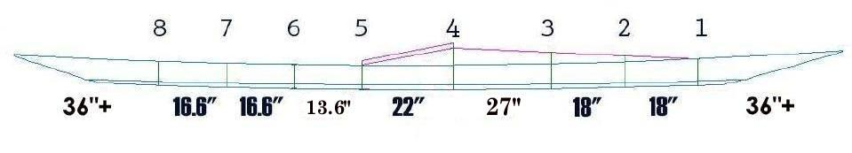

| Cross Section Spacing | Menu Previous Page Next Page |
|  | |
|
Sea Ranger Cross Section Spacing - Mark the cross section locations along the strongback based on the chart above. When the frame is assembled on the strongback, cross sections 2 - 7 will be snapped in place based on the lines drawn. After all sections are aligned, pop rivets will be used to hold the sections in place and to define the cross section locations for subsequent assembly of the frame. |
|